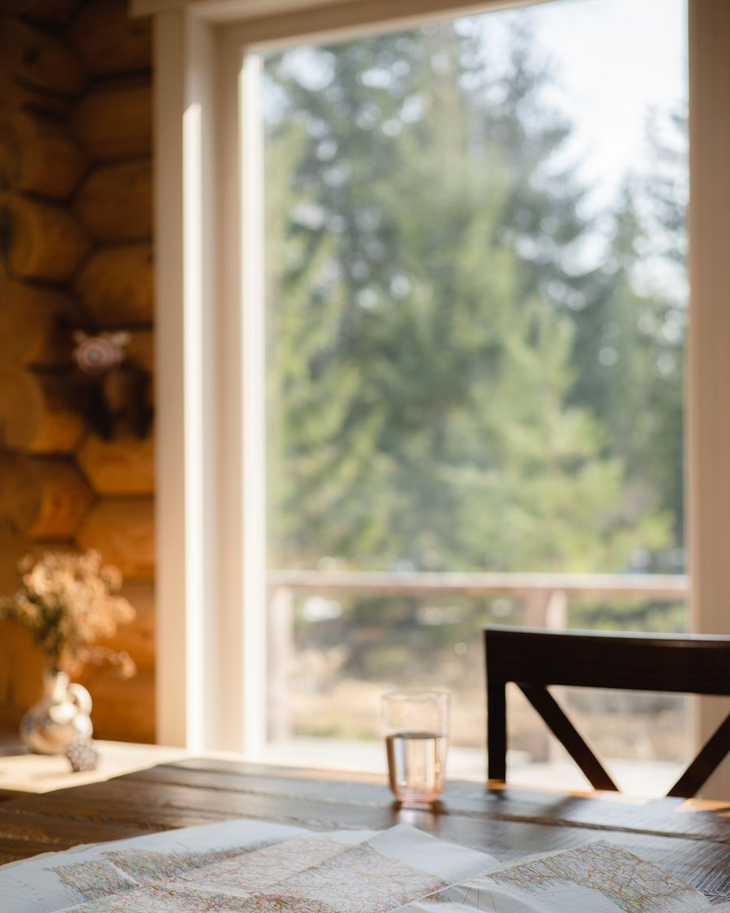
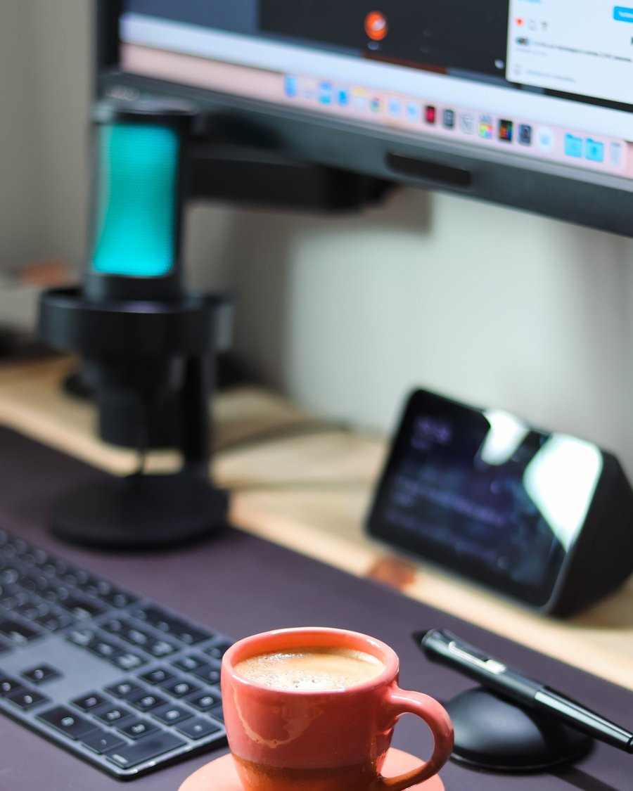
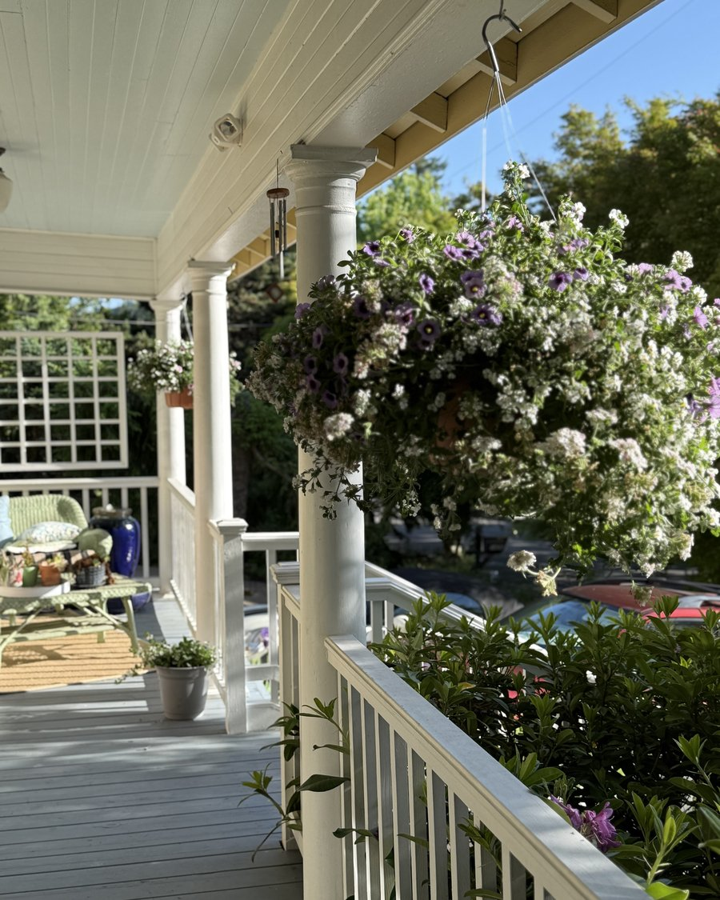
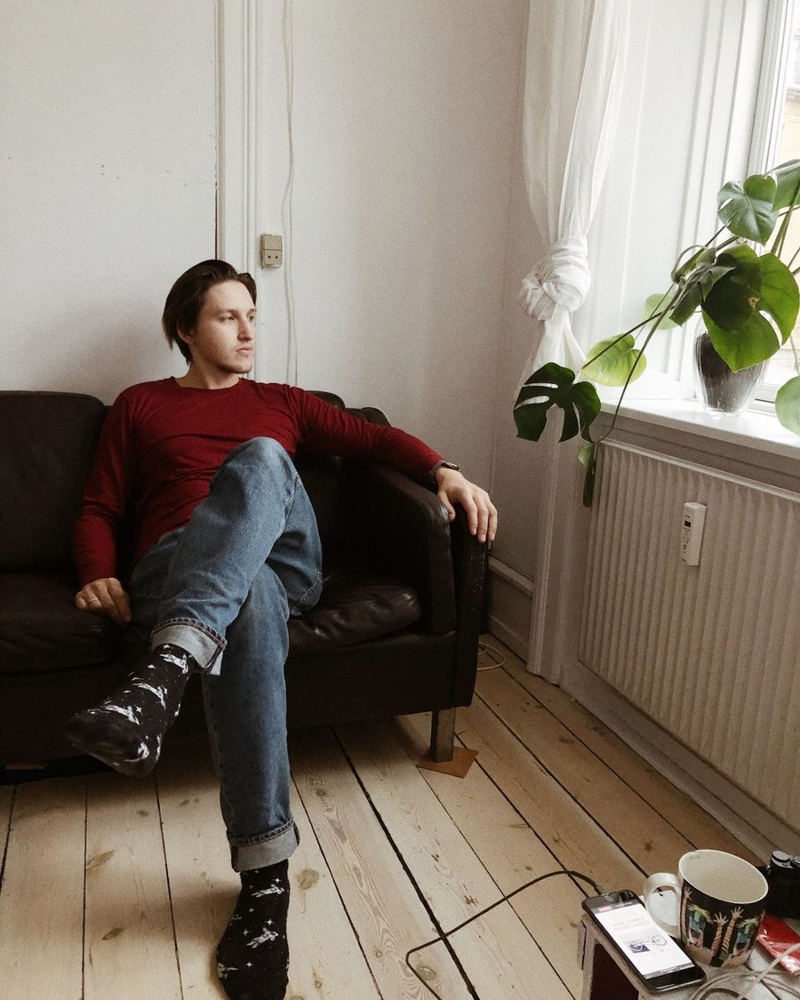
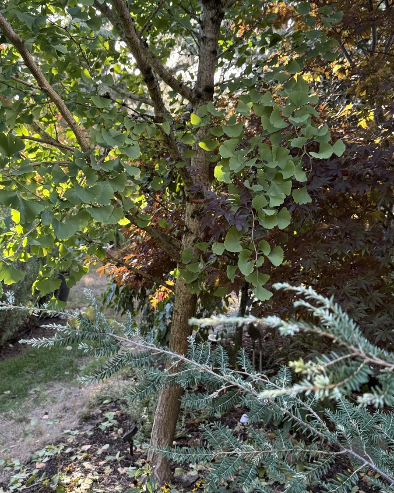

They may show up in a doorway in Tennessee, in a shaman’s therapy room, or in the quiet of a street that doesn’t know why it feels different today. These are a few of those things.
We were visiting good friends who live in a log home in the east Tennessee hills — a couple dealing with ongoing health issues. The house was beautiful and remote, nested in trees, no close neighbors. It was also full of Alexa pods, every room, and underneath it all, a gridline intersection sitting directly below the bedroom where they slept as well as a spring that flowed underneath.

I spent the first day in the basement — electrical panel, well water filtration, washer and dryer, two refrigerators, a WiFi modem. Geopathic stress points, architectural stress points. The kind of invisible load that accumulates quietly over years and shows up in the body before it shows up anywhere else.
The second day, the husband was sick in bed with a respiratory infection. That’s where I went to work.
I found my first stress point in the bedroom doorway — and as I stood there, his wife appeared in that exact spot. She looked at me with the kind of polite skepticism I recognize. “I don’t really feel anything,” she said.
I asked her to hold her arm out. I was going to muscle test her.
At that spot in the doorway, her arm dropped. A few feet away, it held. I placed the BioGeometry® solution on the stress point I had found. I asked her to hold her arm out again. It tested strong.
She stood there for a moment. Then: “Keep working — I’m liking this.”
The next morning, her husband came into the kitchen looking like himself again.
You don’t have to feel it for it to be working. But sometimes — you do.
She was a shaman and worked in the world of energy medicine with clients on a daily basis. However, she was seeing multiple physicians for the health problems she was battling. She was taking more supplements than I could count, working with multiple therapies, multiple modalities, years of sincere and disciplined seeking.

And still, something wasn’t resolving.
When she came to me, I listened to all of it. And then I said: “I think it’s time we talk about the elephant in the room. And it’s your room.”
Her health issues had forced her to stay at home to do her work, live her life. The space she was sleeping in, healing in, or trying to — had never been fully addressed except for the placing of specific crystals around the home. Nothing on the level of this work.
This work doesn’t replace what you’re already doing. It’s not another modality to add to the stack. It’s the thing that makes the stack make sense. The foundation the rest of it has been waiting for.
Sometimes the missing piece isn’t a supplement, or a practitioner, or a protocol.
Sometimes it’s the room.
My own home was where I first understood what that really meant.
Our house is 115 years old: original floors, plaster and lath walls, wavy glass windows. We were restoring it carefully — preserving what mattered, replacing only what had to go. But something in the space felt tense in a way that was easy to feel and hard to explain. For years, my wife had been waking at 1:30 or 2 a.m., moving to the guest room, unable to come back to sleep in our bed. We’d stopped thinking of it as a problem.

It had simply become the way things were.
The house became my laboratory — not because of its age, but because it gave me a place to learn in real time, in my own space, on my own terms. When I began addressing the grid lines in earnest, the nighttime waking stopped. Later, after practitioner training, I returned with a more complete set of tools, and something in the house settled even further.
It was as if the house took a long deep breath in, exhaled slowly, and dropped its shoulders.
That’s when I understood what this work could do — not just for clients, but for people who have lived with tension so long they’ve forgotten what ease feels like.
She approached me after a talk, already thinking about the new place they were preparing to move into — and already uneasy about the electrical situation there, including solar panels positioned close to the house.
Then, with a kind of tired humor, she mentioned it would help if she could get her partner moving so they could actually relocate. She was managing an entire homestead — livestock, outbuildings, all of it — and on his days off, he had taken to sitting on the couch, absorbed in the internet. The momentum had all but stalled.

I offered to look at the house they were still living in first.
What I found in the area where her partner spent his time was a layered zone of geopathic and EMF stress — the router, the cords, and the position of the space all contributing to an environment that pulled energy down rather than supporting it. I balanced the electrical panel, addressed the room, and worked through the stress patterns in the home.
She didn’t tell her partner what had been done.
A few days later, out of the blue, he turned to her and said: “We need to get going on getting this stuff moved.”
It wasn’t that someone convinced him. Nothing visible had changed. But the space had — and something in him responded.
There’s a principle in this work that doesn’t get talked about enough — maybe because it sounds too simple, or too large.
When a space comes into balance, it doesn’t stop at the walls.
I’ve seen this in my own yard.
There’s a ginkgo in our yard that puzzled me for years. It was young when we planted it, and as it grew, it leaned — not toward the light, not away from the house in any way I could account for. Just away. From something. I noted it and moved on.

Around the same time, one of five compact strawberry bushes along our front boundary died. The others were fine. Same soil, same water, same exposure. That one just didn’t make it. I had no explanation.
It wasn’t until I began working on our own home — mapping the gridlines, identifying the stress points — that I understood what I’d been looking at. From inside my home, I followed the line as it ran directly alongside the ginkgo and continued straight toward where that bush had stood. The tree had been growing around a vertical wall of stress it could feel and I couldn’t see. The bush had been sitting in it.
I placed a solution on the line inside the house — addressing what I had measured there. The correction wasn’t made in the yard at all.
The ginkgo has been growing straight ever since. We removed the strawberry bushes and replanted the border with junipers. All five are thriving.
I’ve watched it happen quietly in other ways too — in the margins of sessions that were supposed to be about something else. A client settles their home. A relationship that had been strained starts breathing again. A neighbor who’d been difficult becomes easier. Nothing dramatic. Just — something shifts in the surrounding field, the way a tuning fork will start another tuning fork singing without ever touching it.
Resonance doesn’t need permission to travel. And it doesn’t stop at the property line.
A home that is whole and coherent and quietly humming at the right frequency doesn’t just serve the people inside it. It becomes something the street can lean on without knowing why.
Most of us are already trying to be that — a source of steadiness for the people around us. We give outward from the self: in our relationships, our work, our communities.
What if the home is where that starts? What if the most quietly radical act of care for the people around you is to tend, with real precision and real knowledge, to the space you return to every night?
Not as an escape from the world. As a contribution to it.
The light needs somewhere to land — and then it keeps going.
Let’s Begin